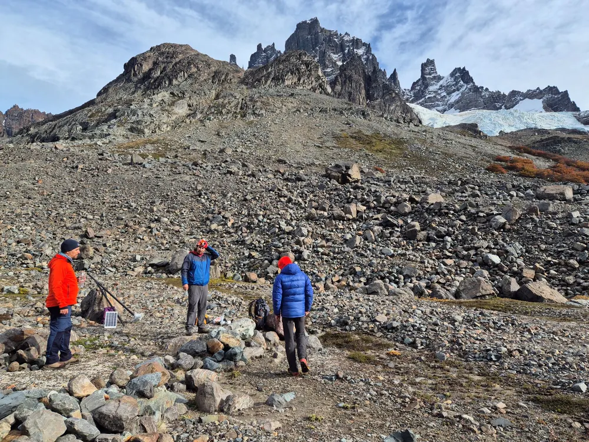

Universidad de Playa Ancha · Valparaíso, Chile
TeleAmb
Laboratorio de Teledetección
y Monitoreo Ambiental
Medimos con satélites y drones cómo cambian la nieve, los bosques y las ciudades de Chile, y entregamos esos datos a quienes toman decisiones.
- 26 años de nieve andina analizados
- 8 visores abiertos y gratuitos
- 18 publicaciones científicas
- Con la DGA, ANID FONDEF y municipios
Empieza por aquí
¿Qué te trae por aquí?
Necesito datos confiables para decidir sobre mi territorio.
Busco datos, publicaciones o un lugar para mi tesis.
Necesito una fuente experta o imágenes para una nota.
Observatorio Satelital de Nieves
Los Andes centrales perdieron cerca de 80.000 km² de nieve desde el año 2000.
Es casi cinco veces la Región de Valparaíso. Lo medimos con 26 años de imágenes satelitales, y lo seguimos a diario junto a la Dirección General de Aguas para saber cuánta agua llegará a Chile central.
500m
ha subido la línea de nieve en algunos sectores entre los 29° y 36° S
81
estaciones de nieve revisadas, con datos abiertos
42%
menos superficie nevada en verano hacia 2050 en el Aconcagua y el Maipo, si sigue la tendencia
Qué hacemos
Cinco temas, un mismo territorio
Nieve y glaciares
Para anticipar cuánta agua tendremos en primavera y verano.
Cuánto dura la nieve, a qué altura cae y cómo cambian los glaciares, desde Perú hasta la Patagonia.
Cuencas y ríos
Para gestionar mejor el agua de montaña.
Cómo la nieve que se derrite llega a los ríos de Chile central, y qué pasa cuando hay menos.
Bosques y suelos
Para saber qué se pierde, qué se recupera y dónde conservar.
Mapas de bosque nativo y coberturas de suelo con satélites y vuelos de dron.
Incendios
Para dimensionar el daño y priorizar la restauración.
Qué tan fuerte se quemó cada sector y cómo se recupera el bosque después, en plena sequía.
Ciudades
Para planificar áreas verdes y enfrentar el calor urbano.
Indicadores satelitales de áreas verdes, temperatura y crecimiento para comunas chilenas.
Casos aplicados
Proyectos que ya se usan
- El problema
- Chile central depende del agua de la nieve, pero en la alta cordillera casi no hay estaciones.
- Qué hicimos
- Mapas diarios de nieve para todo Chile y 26 años de tendencias por cuenca.
- Con quién
- Dirección General de Aguas · ANID FONDEF
- El problema
- Tras el incendio de febrero de 2024 en Viña del Mar, había que saber dónde y con qué fuerza se quemó.
- Qué hicimos
- Un mapa público de severidad, con comparador antes y después.
- Para quién
- Municipios, equipos técnicos y vecinos
- El problema
- Quilpué necesitaba datos para planificar áreas verdes, calor y crecimiento urbano.
- Qué hicimos
- La plataforma GENIUS, con indicadores satelitales que se actualizan.
- Con quién
- Municipalidad de Quilpué · GORE Valparaíso · U. de Chile
Pruébalo tú
Lee una imagen satelital
como lo hacemos nosotros
Arrastra la barra. A la izquierda, la imagen como llega del satélite; a la derecha, lo que obtenemos al procesarla.
La vegetación se ve roja porque refleja mucha luz infrarroja, invisible para nuestros ojos. Es una demostración simplificada.
Mapas abiertos
Nuestros mapas,
libres para cualquiera
No necesitas cuenta ni saber de teledetección: entra, elige un lugar y mira.
Noticias
En terreno y en los medios
Publicaciones
Nuestra ciencia,
en un minuto
Cada estudio tiene un resumen en lenguaje simple y en audio. Dale play.
Quiénes somos
Miramos desde arriba, pero validamos en terreno
Somos geógrafos, geólogos, arquitectos y agrónomos de la Facultad de Ciencias Naturales y Exactas de la Universidad de Playa Ancha. Trabajamos con imágenes de Landsat, Sentinel y MODIS, volamos drones y subimos a la cordillera a instalar estaciones para comprobar lo que vemos desde el espacio.
Conoce a todo el equipo
Trabajemos juntos
¿Tienes un territorio que analizar?
Cuéntanos el problema y te diremos qué datos existen y qué podemos medir. Trabajamos con municipios, servicios públicos, empresas y universidades.